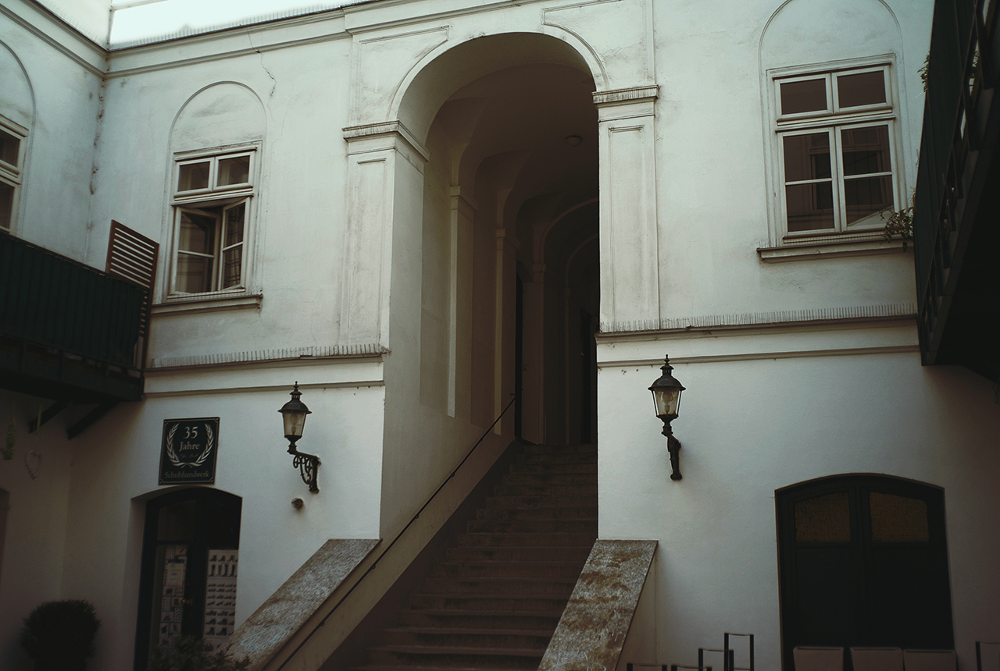
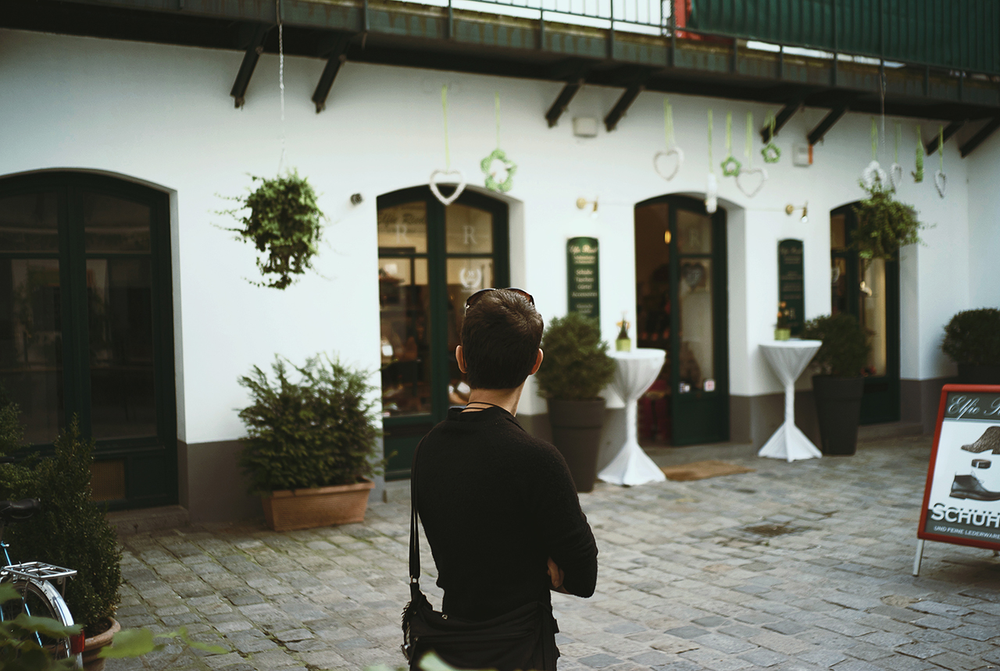
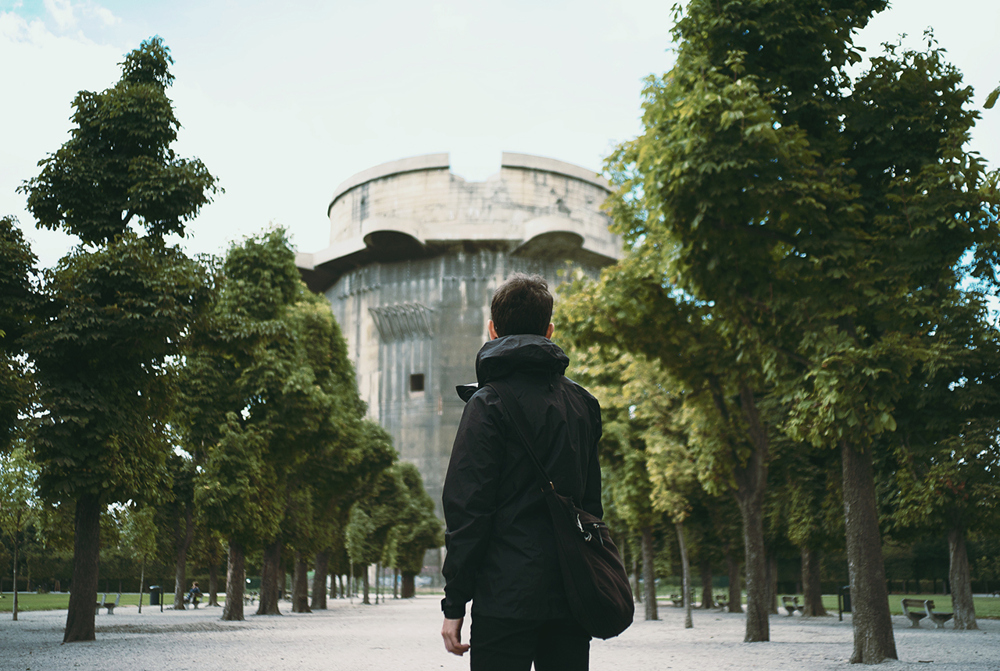
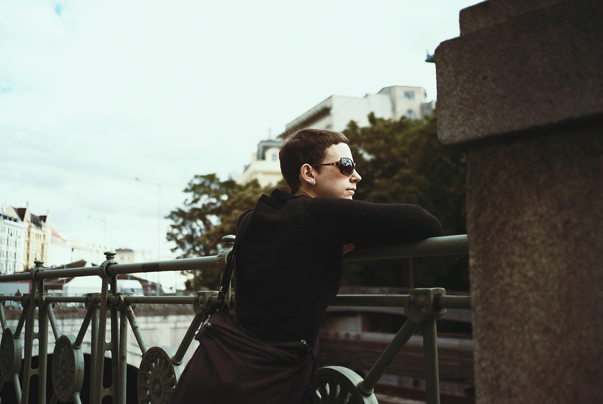
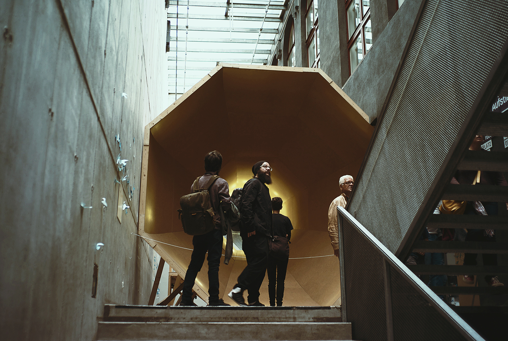
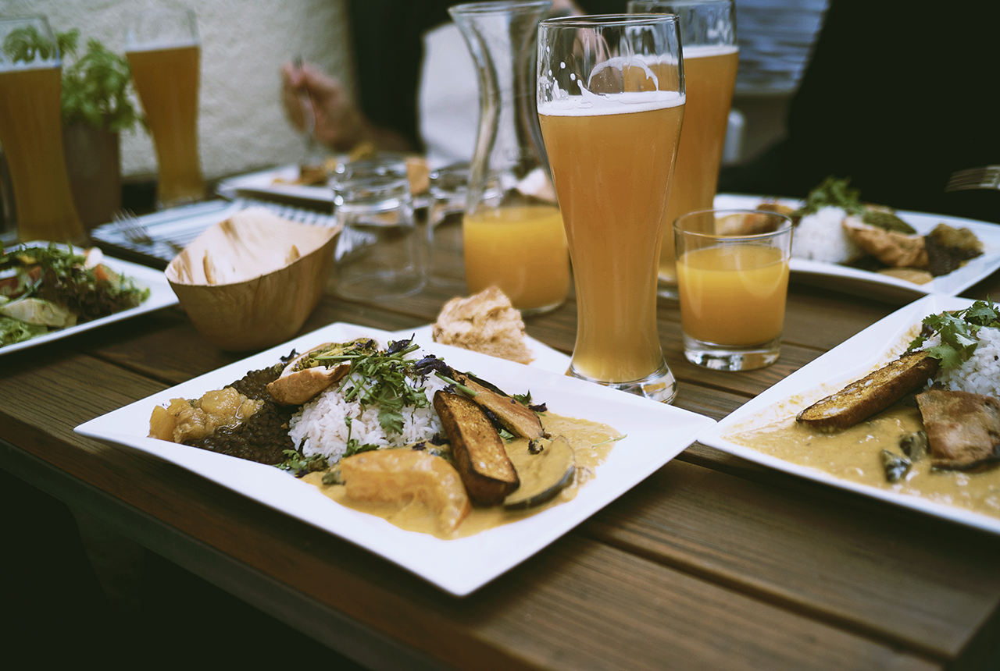
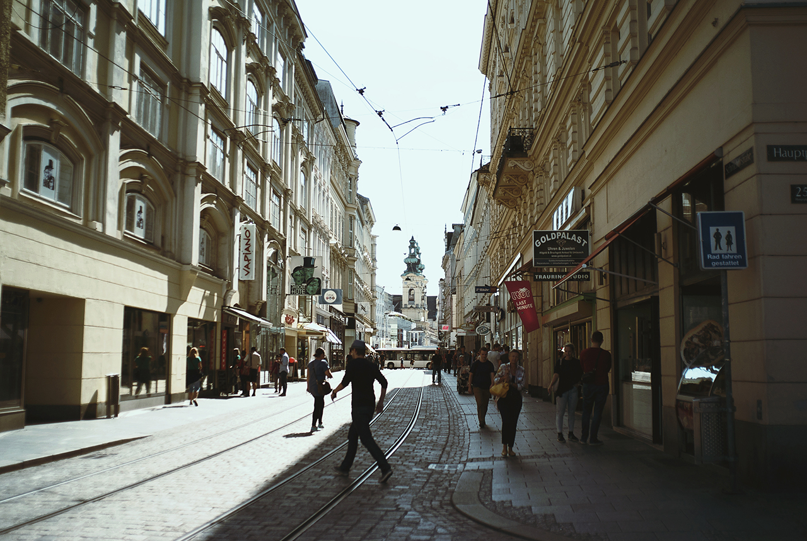
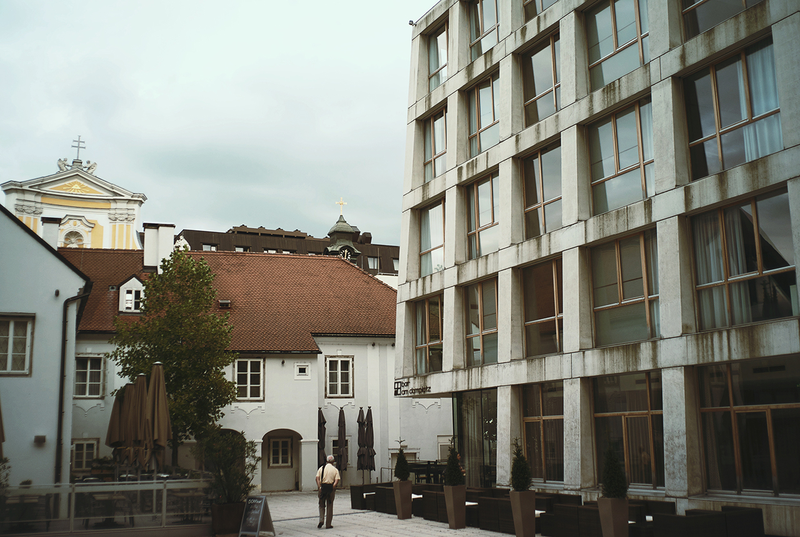
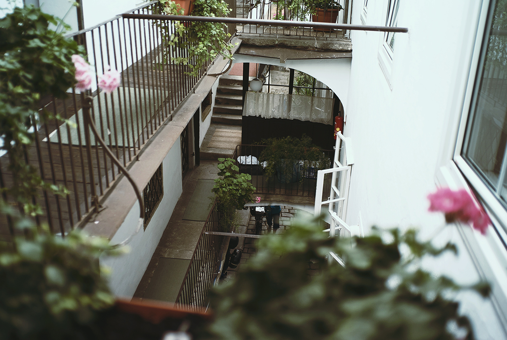

Trip to Austria, in September of 2015, for Ars Electronica.
Gave a talk about the future of internet curation.
Streets Like Amadeus09S01Vienna09S00Suddenly, Half-Life09R13Vienna09R12Ars Electronica09R11Linz Food09R08Linz09R07Wolfinger Hotel09R06Travel to Vienna09R05